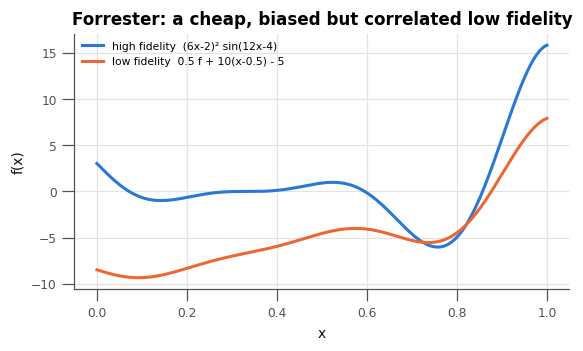
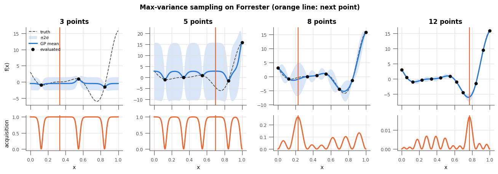
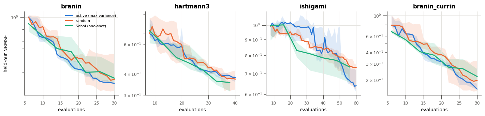
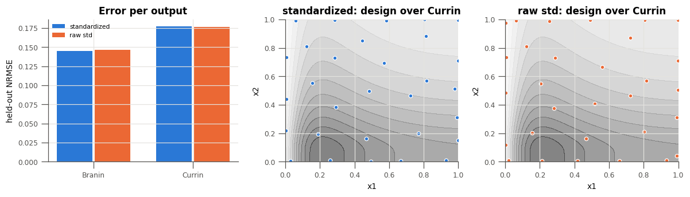
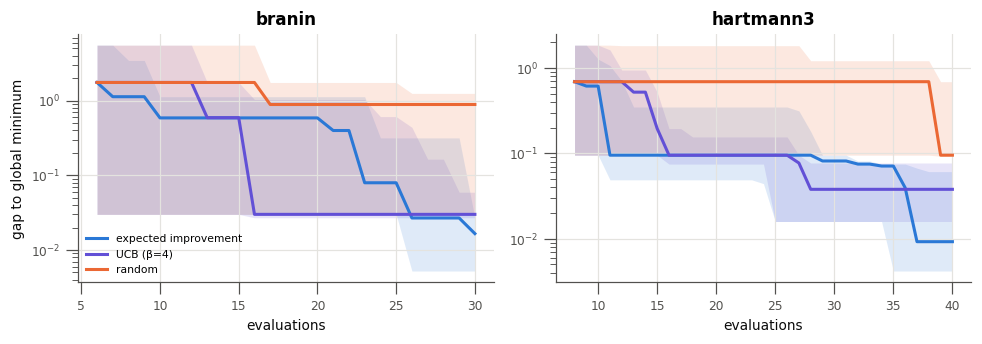
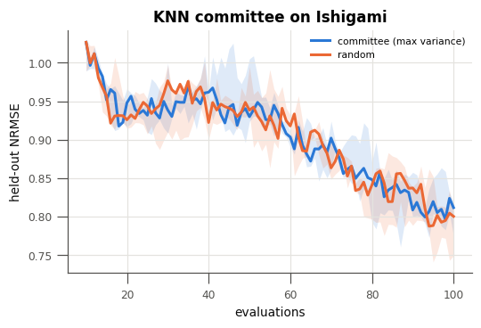
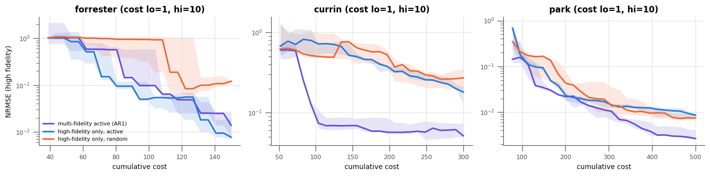
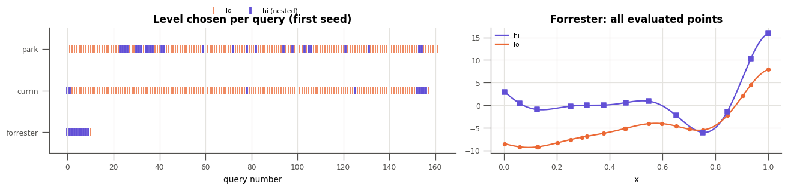
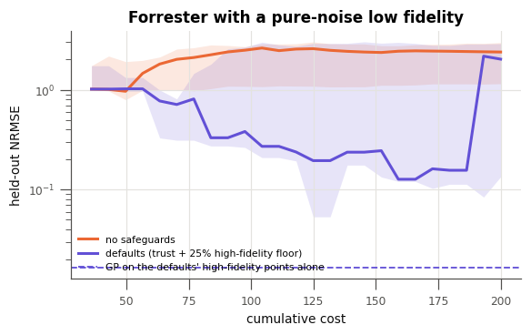

Active Learning on Benchmark Functions¶
This tutorial shows the multioutreg.active prototype on analytic benchmark functions, where the true response is known everywhere, so every surrogate can be scored on a large held-out set. The design behind it is on the Active Learning Plan page.
What this tutorial covers:
Benchmarks: the analytic test problems, including multi-fidelity pairs
Watching the loop: one-dimensional max-variance sampling, step by step
Active vs passive designs: held-out error against random and Sobol designs
Multi-output standardization: why output stds must be standardized
Batch selection: top-k vs distance-penalized batches
Optimization: expected improvement and UCB
Query-by-committee: active learning for a model with no native uncertainty
Multi-fidelity active learning: choosing the point and the fidelity level under a cost budget
Summary
Every experiment repeats over a few seeds and reports the median (line) and the range (band). The seed counts and budgets are small so the notebook runs in a few minutes; the conclusions are indicative, not a benchmark study.
[1]:
import warnings
import matplotlib.pyplot as plt
import numpy as np
from sklearn.gaussian_process.kernels import ConstantKernel, Matern, WhiteKernel
from multioutreg.active import (
ActiveLearner,
CommitteeSurrogate,
MultiFidelityActiveLearner,
fidelity_info,
get_benchmark,
heldout_metrics,
level_trust,
select_batch,
BENCHMARKS,
)
from multioutreg.surrogates import (
AdditiveCorrectionVFM,
GaussianProcessSurrogate,
KNeighborsSurrogate,
)
warnings.filterwarnings("ignore") # GP optimizer convergence chatter
# Colors by role: active learning, passive baselines, and the multi-fidelity learner.
BLUE, ORANGE, AQUA, VIOLET = "#2a78d6", "#eb6834", "#1baf7a", "#6250d6"
INK, MUTED, GRID = "#0b0b0b", "#52514e", "#e4e3df"
plt.rcParams.update({
"figure.dpi": 110, "axes.edgecolor": MUTED, "axes.labelcolor": INK, "axes.titlesize": 11,
"axes.titleweight": "bold", "axes.spines.top": False, "axes.spines.right": False,
"axes.grid": True, "grid.color": GRID, "grid.linewidth": 0.8, "xtick.color": MUTED,
"ytick.color": MUTED, "lines.linewidth": 2, "legend.frameon": False, "font.size": 9,
"axes.labelsize": 9, "xtick.labelsize": 8, "ytick.labelsize": 8, "legend.fontsize": 7,
"figure.titlesize": 11,
})
SEEDS = range(3)
def gp():
# Matern-5/2 GP with a length-scale floor and a few optimizer restarts. sklearn's
# optimizer otherwise falls into a "short length scale + noise" optimum on small
# designs (seen on Forrester with ~10 points), which ruins any variance-based acquisition.
kernel = (ConstantKernel(1.0) * Matern(1.0, length_scale_bounds=(0.1, 100.0), nu=2.5)
+ WhiteKernel(1e-6, (1e-10, 1e-2)))
return GaussianProcessSurrogate(kernel=kernel, n_restarts_optimizer=2, random_state=0)
def band(ax, x, runs, color, label):
# Median line plus min-max band over seeds; runs has shape (n_seeds, len(x)).
runs = np.asarray(runs)
ax.fill_between(x, runs.min(0), runs.max(0), color=color, alpha=0.15, lw=0)
ax.plot(x, np.median(runs, 0), color=color, label=label)
def passive(bench, n, method, seed, Xt, Yt, model=gp):
X = bench.sample(n, method=method, seed=seed)
return heldout_metrics(model().fit(X, bench(X)), Xt, Yt)["nrmse"]
## 1. Benchmarks
multioutreg.active.benchmarks defines eight analytic functions (definitions follow the Virtual Library of Simulation Experiments). The multi-fidelity ones have a cheap "lo" and an expensive "hi" level, by default with a 10x cost ratio.
[2]:
print(f"{'name':<15}{'dim':>4}{'outputs':>9} levels costs")
for name in BENCHMARKS:
b = get_benchmark(name)
n_out = b(b.sample(2, seed=0)).shape[1]
print(f"{name:<15}{b.n_features:>4}{n_out:>9} {'/'.join(b.levels):<8} {b.costs}")
name dim outputs levels costs
forrester 1 1 lo/hi {'lo': 1.0, 'hi': 10.0}
branin 2 1 hi {'hi': 1.0}
currin 2 1 lo/hi {'lo': 1.0, 'hi': 10.0}
branin_currin 2 2 hi {'hi': 1.0}
ishigami 3 1 hi {'hi': 1.0}
hartmann3 3 1 hi {'hi': 1.0}
park 4 1 lo/hi {'lo': 1.0, 'hi': 10.0}
borehole 8 1 lo/hi {'lo': 1.0, 'hi': 10.0}
[3]:
b = get_benchmark("forrester")
x = np.linspace(0, 1, 400)[:, None]
fig, ax = plt.subplots(figsize=(6, 3))
ax.plot(x, b(x, "hi"), color=BLUE, label="high fidelity (6x-2)² sin(12x-4)")
ax.plot(x, b(x, "lo"), color=ORANGE, label="low fidelity 0.5 f + 10(x-0.5) - 5")
ax.set(xlabel="x", ylabel="f(x)", title="Forrester: a cheap, biased but correlated low fidelity")
ax.legend(loc="upper left")
plt.show()

## 2. Watching the loop
ActiveLearner takes a model factory and box bounds. Each ask() draws a fresh Sobol candidate pool, scores it with the acquisition and returns the best point(s); tell() adds the evaluated points. run() chains the two for a Python simulator.
Below, the max-variance acquisition (the GP’s predictive variance, standardized by the output’s spread) starts from 3 points on Forrester. Each new point goes where the model is least certain, so the design fills in the domain, and the region around the minimum is resolved because the function’s curvature keeps the variance high there.
[4]:
b = get_benchmark("forrester")
x = np.linspace(0, 1, 400)[:, None]
al = ActiveLearner(gp, b.bounds, acquisition="max_variance", random_state=0)
X0 = al.initial_design(3)
al.tell(X0, b(X0))
snapshots = {0, 2, 5, 9}
fig, axes = plt.subplots(2, 4, figsize=(12, 4.2), sharex=True, gridspec_kw={"height_ratios": [2.2, 1]})
col = 0
for it in range(10):
if it in snapshots:
mean, std = al.fit().predict(x, return_std=True)
mean, std = mean.ravel(), std.ravel()
x_next = al.ask()
top, bot = axes[0, col], axes[1, col]
top.plot(x, b(x), color=MUTED, lw=1.2, ls="--", label="truth")
top.fill_between(x.ravel(), mean - 2 * std, mean + 2 * std, color=BLUE, alpha=0.18, lw=0, label="±2σ")
top.plot(x, mean, color=BLUE, label="GP mean")
top.scatter(al.X_, al.Y_, color=INK, s=22, zorder=3, label="evaluated")
top.axvline(x_next[0, 0], color=ORANGE, lw=1.5)
top.set_title(f"{len(al.X_)} points")
bot.plot(x, al.score(x), color=ORANGE)
bot.axvline(x_next[0, 0], color=ORANGE, lw=1.5)
bot.set_xlabel("x")
col += 1
else:
x_next = al.ask()
al.tell(x_next, b(x_next))
axes[0, 0].set_ylabel("f(x)")
axes[1, 0].set_ylabel("acquisition")
axes[0, 0].legend(loc="upper left", fontsize=7)
fig.suptitle("Max-variance sampling on Forrester (orange line: next point)", fontweight="bold")
fig.tight_layout()
plt.show()

## 3. Active vs passive designs
The real question is whether active learning beats a good passive design of the same size. Two baselines:
random: the same loop with uniformly random scores (so points are i.i.d. uniform, apart from the batch-diversity penalty);
Sobol: a one-shot scrambled Sobol design of each size, a strong space-filling baseline.
The metric is held-out NRMSE (RMSE divided by the test targets’ std, averaged over outputs) on 1,000 points.
[5]:
problems = {"branin": 30, "hartmann3": 40, "ishigami": 60, "branin_currin": 30}
results = {}
for name, budget in problems.items():
b = get_benchmark(name)
Xt = b.sample(1000, method="random", seed=123)
Yt = b(Xt)
n_init = 2 * b.n_features + 2
curves = {}
for acq in ("max_variance", "random"):
runs = []
for s in SEEDS:
al = ActiveLearner(gp, b.bounds, acquisition=acq, n_candidates=512, random_state=s)
hist = al.run(b, n_init=n_init, n_iter=budget - n_init, X_test=Xt, Y_test=Yt)
runs.append([h["nrmse"] for h in hist])
curves[acq] = np.array(runs)
n = np.arange(n_init, budget + 1)
checkpoints = n[:: max(1, len(n) // 6)]
curves["sobol"] = np.array([[passive(b, k, "sobol", s, Xt, Yt) for k in checkpoints] for s in SEEDS])
results[name] = (n, checkpoints, curves)
print(f"{name:<14} final NRMSE (median of {len(SEEDS)}) "
+ " ".join(f"{k}: {np.median(v[:, -1]):.3f}" for k, v in curves.items()))
branin final NRMSE (median of 3) max_variance: 0.147 random: 0.164 sobol: 0.170
hartmann3 final NRMSE (median of 3) max_variance: 0.380 random: 0.373 sobol: 0.357
ishigami final NRMSE (median of 3) max_variance: 0.639 random: 0.732 sobol: 0.734
branin_currin final NRMSE (median of 3) max_variance: 0.159 random: 0.197 sobol: 0.218
[6]:
fig, axes = plt.subplots(1, 4, figsize=(13, 3.2))
for ax, (name, (n, checkpoints, curves)) in zip(axes, results.items()):
band(ax, n, curves["max_variance"], BLUE, "active (max variance)")
band(ax, n, curves["random"], ORANGE, "random")
band(ax, checkpoints, curves["sobol"], AQUA, "Sobol (one-shot)")
ax.set(yscale="log", title=name, xlabel="evaluations")
axes[0].set_ylabel("held-out NRMSE")
axes[0].legend(loc="upper right", fontsize=7)
fig.tight_layout()
plt.show()

Reading the plot. The differences are modest. Max-variance sampling ends ahead of random and Sobol on Branin, Branin–Currin and Ishigami and is roughly level on Hartmann-3, though Ishigami is still poorly fitted by every design at 60 points. A Sobol design is a hard baseline for a GP: a stationary GP’s variance depends only on where the data are, not on the observed values (apart from refitted hyperparameters), so max-variance sampling is itself a space-filling design. Expect larger gains when the response is non-stationary (sharp features in part of the domain) and when the loop’s other features matter: stopping when good enough, batches, and cost awareness (section 8).
## 4. Multi-output standardization
branin_currin has two outputs on very different scales (Branin roughly 0–300, Currin roughly 1–14). max_variance divides each output’s std by that output’s observed spread before summing; otherwise the raw sum is essentially the Branin variance alone. The cell below turns standardization off by passing a unit y_scale and compares per-output error.
[7]:
b = get_benchmark("branin_currin")
Xt = b.sample(1000, method="random", seed=123)
Yt = b(Xt)
per_output = {"standardized": [], "raw std": []}
designs = {}
for label, kw in [("standardized", {}), ("raw std", {"y_scale": np.ones(2)})]:
for s in SEEDS:
al = ActiveLearner(gp, b.bounds, acquisition_kwargs=kw, n_candidates=512, random_state=s)
al.run(b, n_init=6, n_iter=24)
pred = al.fit().predict(Xt)
rmse = np.sqrt(((pred - Yt) ** 2).mean(0)) / Yt.std(0)
per_output[label].append(rmse)
designs.setdefault(label, al.X_)
for label, v in per_output.items():
print(f"{label:<13} NRMSE Branin {np.median(v, 0)[0]:.3f} Currin {np.median(v, 0)[1]:.3f}")
fig, axes = plt.subplots(1, 3, figsize=(11, 3.2), gridspec_kw={"width_ratios": [1.1, 1, 1]})
w = 0.38
for i, (label, color) in enumerate([("standardized", BLUE), ("raw std", ORANGE)]):
axes[0].bar(np.arange(2) + (i - 0.5) * w, np.median(per_output[label], 0), w * 0.95, color=color, label=label)
axes[0].set(xticks=[0, 1], xticklabels=["Branin", "Currin"], ylabel="held-out NRMSE", title="Error per output")
axes[0].legend(fontsize=7)
g = np.linspace(0, 1, 120)
G = np.array([[u, v] for v in g for u in g])
for ax, (label, color) in zip(axes[1:], [("standardized", BLUE), ("raw std", ORANGE)]):
ax.contourf(g, g, b(G)[:, 1].reshape(120, 120), levels=14, cmap="Greys", alpha=0.5)
ax.scatter(*designs[label].T, color=color, s=18, edgecolor="white", linewidth=0.8)
ax.set(title=f"{label}: design over Currin", xlabel="x1", ylabel="x2")
fig.tight_layout()
plt.show()
standardized NRMSE Branin 0.145 Currin 0.178
raw std NRMSE Branin 0.147 Currin 0.177

## 5. Batch selection
When a simulator runs several jobs at once, ask(q) returns q points. Taking the top q scores puts the whole batch on one peak of the acquisition. select_batch instead picks greedily and multiplies the remaining scores by 1 - exp(-d² / 2l²) around each pick (local penalization). The default length scale l is the typical spacing of a space-filling design with as many points as the data plus the batch.
[8]:
b = get_benchmark("branin")
al = ActiveLearner(gp, b.bounds, acquisition="ei", random_state=1)
X0 = al.initial_design(8)
al.tell(X0, b(X0))
g = np.linspace(0, 1, 90)
U = np.array([[u, v] for v in g for u in g])
scores = al.score(al.from_unit(U))
picks = {
"top-k (no penalty)": select_batch(U, scores, 8, length_scale=1e-9),
"penalized (default)": select_batch(U, scores, 8, U_train=al.to_unit(al.X_)),
}
fig, axes = plt.subplots(1, 2, figsize=(9, 3.8), sharey=True)
for ax, (label, idx) in zip(axes, picks.items()):
ax.contourf(g, g, scores.reshape(90, 90), levels=14, cmap="Blues")
ax.scatter(*al.to_unit(al.X_).T, color=INK, s=20, label="evaluated")
ax.scatter(*U[idx].T, color=ORANGE, s=60, marker="X", edgecolor="white", linewidth=1, label="batch of 8")
ax.set(title=label, xlabel="x1 (unit)")
axes[0].set_ylabel("x2 (unit)")
axes[0].legend(loc="upper right", fontsize=7)
fig.suptitle("Expected improvement on Branin (darker = higher)", fontweight="bold")
fig.tight_layout()
plt.show()

## 6. Optimization
With acquisition="ei", "pi" or "ucb" the loop minimizes (or, with minimize=False, maximizes) one output or a weighted sum of outputs (weights). The plot shows the gap between the best value found and the known global minimum.
[9]:
opt = {"branin": 30, "hartmann3": 40}
fig, axes = plt.subplots(1, 2, figsize=(9, 3.2))
for ax, (name, budget) in zip(axes, opt.items()):
b = get_benchmark(name)
n_init = 2 * b.n_features + 2
n = np.arange(n_init, budget + 1)
for acq, color, label in [("ei", BLUE, "expected improvement"), ("ucb", VIOLET, "UCB (β=4)"), ("random", ORANGE, "random")]:
runs = []
for s in SEEDS:
al = ActiveLearner(gp, b.bounds, acquisition=acq, n_candidates=1024, random_state=s)
hist = al.run(b, n_init=n_init, n_iter=budget - n_init)
runs.append([max(h["best"] - b.minimum, 1e-6) for h in hist])
band(ax, n, runs, color, label)
print(f"{name:<10} {acq:<7} final gap (median) {np.median(np.array(runs)[:, -1]):.2e}")
ax.set(yscale="log", title=name, xlabel="evaluations")
axes[0].set_ylabel("gap to global minimum")
axes[0].legend(fontsize=7)
fig.tight_layout()
plt.show()
branin ei final gap (median) 1.66e-02
branin ucb final gap (median) 3.00e-02
branin random final gap (median) 8.88e-01
hartmann3 ei final gap (median) 9.24e-03
hartmann3 ucb final gap (median) 3.79e-02
hartmann3 random final gap (median) 9.51e-02

## 7. Query-by-committee
Models such as KNN, linear models or plain trees have no predictive std; BaseSurrogate.predict(return_std=True) returns zeros for them. The learner refuses that (predict_mean_std raises), because zero std would read as “perfectly known”. CommitteeSurrogate fits bootstrap copies of any model and uses their disagreement as the std. penalize_train=True also penalizes candidates near existing points, because a committee’s spread does not reliably shrink at the training data.
[10]:
b = get_benchmark("ishigami")
try:
ActiveLearner(KNeighborsSurrogate, b.bounds).run(b, n_init=8, n_iter=1)
except ValueError as e:
print("Refused:", e)
Xt = b.sample(1000, method="random", seed=123)
Yt = b(Xt)
committee = lambda: CommitteeSurrogate(KNeighborsSurrogate, n_members=8)
knn_final = {}
fig, ax = plt.subplots(figsize=(5.5, 3.2))
for acq, color, label in [("max_variance", BLUE, "committee (max variance)"), ("random", ORANGE, "random")]:
runs = []
for s in SEEDS:
al = ActiveLearner(committee, b.bounds, acquisition=acq, penalize_train=True, n_candidates=512, random_state=s)
hist = al.run(b, n_init=10, n_iter=90, X_test=Xt, Y_test=Yt)
runs.append([h["nrmse"] for h in hist])
band(ax, np.arange(10, 101), runs, color, label)
knn_final[acq] = np.median(np.array(runs)[:, -1])
print("final NRMSE (median):", {k: round(v, 3) for k, v in knn_final.items()})
ax.set(title="KNN committee on Ishigami", xlabel="evaluations", ylabel="held-out NRMSE")
ax.legend(fontsize=7)
plt.show()
Refused: Model returned std == 0 everywhere for output(s) [0]; it has no native uncertainty. Wrap it in CommitteeSurrogate, or pass allow_zero_std=True.
final NRMSE (median): {'max_variance': 0.811, 'random': 0.8}

Result: no gain here. The committee runs, but its points are no better than random ones. A bootstrap KNN committee disagrees mostly where resampling happens to drop a neighbour, not where the function is hard, so its spread is a weak guide. Query-by-committee is the right mechanism for models without native uncertainty; a more diverse committee (for example different model families, or the Auto-Detect candidates) is the next thing to try.
## 8. Multi-fidelity active learning
With fidelity levels, each query is a pair (x, level) and the budget is in cost units. MultiFidelityActiveLearner asks how much of the high-fidelity predictive variance a run at each level would remove, per unit cost.
For the AR1 model AdditiveCorrectionVFM, f_hi = ρ f_lo + δ, so var_hi = ρ² var_lo + var_δ:
a low-fidelity run at
xcan removeρ² var_lo(x);a high-fidelity run (by default nested: the low fidelity is also run at the same point, and both costs are paid) removes all of
var_hi(x).
The score is that reduction (standardized, summed over outputs) divided by the query’s cost. Two safeguards keep the cheap level from absorbing the budget when it does not deserve to:
level trust: a lower level’s credit is multiplied by the squared lower confidence bound of its correlation with the high-fidelity data, which is zero until there are 6 high-fidelity points;
``min_hi_fraction`` (default 0.25): a high-fidelity query is forced whenever high-fidelity spending falls below that share of the total.
The baselines spend the same budget only on the high fidelity: active (max variance) and random.
[11]:
def ar1():
return AdditiveCorrectionVFM(lo_surrogate_cls=gp, hi_surrogate_cls=gp, oof_cv=None)
def at_costs(hist, grid):
# Error of the latest model fitted within each cost on the grid (step function).
cost = np.array([h["cost"] for h in hist])
err = np.array([h["nrmse"] for h in hist])
return np.array([err[cost <= c][-1] if np.any(cost <= c) else np.nan for c in grid])
mf_problems = {"forrester": 150, "currin": 300, "park": 500}
mf_results, mf_runs = {}, {}
for name, budget in mf_problems.items():
b = get_benchmark(name)
Xt = b.sample(1000, method="random", seed=123)
Yt = b(Xt)
sims = {lvl: (lambda X, lvl=lvl: b(X, lvl)) for lvl in b.levels}
c_hi = b.costs["hi"]
n_hi0 = b.n_features + 2
n_lo0 = 3 * n_hi0
grid = np.linspace(n_lo0 * b.costs["lo"] + n_hi0 * c_hi, budget, 25)
curves = {"mf": [], "hi_active": [], "hi_random": []}
for s in SEEDS:
mf = MultiFidelityActiveLearner(ar1, b.bounds, b.levels, b.costs, n_candidates=512, random_state=s)
hist = mf.run(sims, budget=budget, n_init={"lo": n_lo0, "hi": n_hi0}, X_test=Xt, Y_test=Yt)
curves["mf"].append(at_costs(hist, grid))
mf_runs.setdefault(name, mf)
n_hi_budget = int(budget // c_hi)
for acq, key in (("max_variance", "hi_active"), ("random", "hi_random")):
al = ActiveLearner(gp, b.bounds, acquisition=acq, n_candidates=512, random_state=s)
h = al.run(b, n_init=n_hi0, n_iter=n_hi_budget - n_hi0, X_test=Xt, Y_test=Yt)
for r in h:
r["cost"] = r["n_evals"] * c_hi
curves[key].append(at_costs(h, grid))
mf_results[name] = (grid, {k: np.array(v) for k, v in curves.items()})
print(f"{name:<10} final NRMSE (median) "
+ " ".join(f"{k}: {np.nanmedian(v[:, -1]):.4f}" for k, v in mf_results[name][1].items())
+ f" | high-fidelity share of MF spend: {mf.spent_['hi'] / mf.total_spent:.0%}")
forrester final NRMSE (median) mf: 0.0140 hi_active: 0.0078 hi_random: 0.1208 | high-fidelity share of MF spend: 87%
currin final NRMSE (median) mf: 0.0517 hi_active: 0.1807 hi_random: 0.2714 | high-fidelity share of MF spend: 53%
park final NRMSE (median) mf: 0.0027 hi_active: 0.0087 hi_random: 0.0075 | high-fidelity share of MF spend: 64%
[12]:
fig, axes = plt.subplots(1, 3, figsize=(13, 3.3))
for ax, (name, (grid, curves)) in zip(axes, mf_results.items()):
band(ax, grid, curves["mf"], VIOLET, "multi-fidelity active (AR1)")
band(ax, grid, curves["hi_active"], BLUE, "high-fidelity only, active")
band(ax, grid, curves["hi_random"], ORANGE, "high-fidelity only, random")
ax.set(yscale="log", title=f"{name} (cost lo=1, hi=10)", xlabel="cumulative cost")
axes[0].set_ylabel("NRMSE (high fidelity)")
axes[0].legend(fontsize=7)
fig.tight_layout()
plt.show()

Reading the plot. On Currin and Park the multi-fidelity learner reaches a given high-fidelity error at a fraction of the cost of spending on the high fidelity alone; the cheap level is informative and the learner leans on it. On one-dimensional Forrester, high-fidelity-only active learning is as good or better: 15 high-fidelity points already pin down a 1-D function, and the low level’s linear bias has to be learned by δ from the same few points. Multi-fidelity pays off when the high
fidelity is too expensive to cover the domain on its own.
Which level did the learner pick, and where? The strip below shows the sequence of queries for the first seed of each problem, and the right panel shows where the Forrester queries landed.
[13]:
fig, axes = plt.subplots(1, 2, figsize=(12, 3), gridspec_kw={"width_ratios": [1.4, 1]})
for row, (name, mf) in enumerate(mf_runs.items()):
levels = [h["level"] for h in mf.history_[1:]]
x = np.arange(len(levels))
is_hi = np.array([lvl == "hi" for lvl in levels])
axes[0].scatter(x[~is_hi], np.full((~is_hi).sum(), row), color=ORANGE, s=60, marker="|", linewidths=1, label="lo" if row == 0 else None)
axes[0].scatter(x[is_hi], np.full(is_hi.sum(), row), color=VIOLET, s=60, marker="|", linewidths=2.5, label="hi (nested)" if row == 0 else None)
axes[0].set(yticks=range(len(mf_runs)), yticklabels=list(mf_runs), ylim=(-0.5, len(mf_runs) - 0.5),
xlabel="query number", title="Level chosen per query (first seed)")
axes[0].grid(axis="y", visible=False)
axes[0].legend(loc="lower center", bbox_to_anchor=(0.5, 1.08), ncol=2)
b = get_benchmark("forrester")
mf = mf_runs["forrester"]
xg = np.linspace(0, 1, 400)[:, None]
axes[1].plot(xg, b(xg, "hi"), color=VIOLET, lw=1.5, label="hi")
axes[1].plot(xg, b(xg, "lo"), color=ORANGE, lw=1.5, label="lo")
axes[1].scatter(mf.data_["lo"][0], mf.data_["lo"][1], color=ORANGE, s=14, zorder=3)
axes[1].scatter(mf.data_["hi"][0], mf.data_["hi"][1], color=VIOLET, s=34, marker="s", zorder=3)
axes[1].set(title="Forrester: all evaluated points", xlabel="x")
axes[1].legend(fontsize=7)
fig.tight_layout()
plt.show()

When the cheap level is useless¶
The safeguards matter when the low fidelity carries no information. Below, the “low fidelity” is pure noise. With trust_z=None and min_hi_fraction=0 the learner trusts the AR1 variance split as fitted. With only 3 high-fidelity points, least squares fits a huge ρ to the noise, ρ² var_lo looks large everywhere, and the budget drains into the noise. With the defaults the learner keeps buying high-fidelity runs.
The dashed line is a plain GP fitted to the high-fidelity points the default learner collected, ignoring the low level.
[14]:
b = get_benchmark("forrester")
Xt = b.sample(1000, method="random", seed=123)
Yt = b(Xt)
fig, ax = plt.subplots(figsize=(6, 3.2))
for label, kw, color in [("no safeguards", dict(trust_z=None, min_hi_fraction=0.0), ORANGE),
("defaults (trust + 25% high-fidelity floor)", {}, VIOLET)]:
grid = np.linspace(36, 200, 25)
runs, shares, hi_only = [], [], []
for s in SEEDS:
rng = np.random.default_rng(s)
sims = {"lo": lambda X, rng=rng: rng.standard_normal((len(X), 1)), "hi": lambda X: b(X, "hi")}
mf = MultiFidelityActiveLearner(ar1, b.bounds, b.levels, b.costs, n_candidates=512, random_state=s, **kw)
hist = mf.run(sims, budget=200, n_init={"lo": 6, "hi": 3}, X_test=Xt, Y_test=Yt)
runs.append(at_costs(hist, grid))
shares.append(mf.spent_["hi"] / mf.total_spent)
hi_only.append(heldout_metrics(gp().fit(*mf.data_["hi"]), Xt, Yt)["nrmse"])
band(ax, grid, runs, color, label)
print(f"{label:<45} final NRMSE {np.median(np.array(runs)[:, -1]):.3f} high-fidelity share {np.median(shares):.0%}"
f" GP on its high-fidelity points alone {np.median(hi_only):.3f}")
ax.axhline(np.median(hi_only), color=VIOLET, ls="--", lw=1.2, label="GP on the defaults' high-fidelity points alone")
ax.set(yscale="log", title="Forrester with a pure-noise low fidelity", xlabel="cumulative cost", ylabel="held-out NRMSE")
ax.legend(fontsize=7)
plt.show()
no safeguards final NRMSE 2.380 high-fidelity share 15% GP on its high-fidelity points alone 1.023
defaults (trust + 25% high-fidelity floor) final NRMSE 2.020 high-fidelity share 85% GP on its high-fidelity points alone 0.017

What the safeguards do and do not fix. They fix the spending: with the defaults most of the budget goes to the high fidelity instead of the noise. They do not fix the model: AdditiveCorrectionVFM still fuses the noise level through ρ f_lo, so its error stays erratic and can jump when a late low-fidelity run refits ρ. A GP on the same high-fidelity points alone does far better. The next step in the plan is model selection across levels: once a level’s trust stays near zero,
drop it from the surrogate.
## 9. Summary
Max-variance active learning is a sound default for global accuracy with a GP, but on smooth, stationary problems a Sobol design of the same size is nearly as good. The gains are modest here; the loop’s other features (stopping, batches, costs) carry much of the value.
Standardize before aggregating outputs. With per-output stationary GPs it hardly changed the result on Branin–Currin, but without it the acquisition depends on the outputs’ units; it matters once outputs have different models or length scales.
Batches need diversity. Plain top-k puts the whole batch on one peak.
EI / UCB close in on the optimum of Branin and Hartmann-3 within a few dozen runs, far ahead of random search.
Query-by-committee brings models without native uncertainty into the loop, but a bootstrap KNN committee gave no gain over random points.
Multi-fidelity: on Currin and Park, cost-aware selection reaches a given high-fidelity error at a fraction of the cost of the high fidelity alone; on 1-D Forrester it does not help. The trust factor and high-fidelity floor stop a useless cheap level from absorbing the budget, but dropping such a level from the model is still to do.
Next steps (from the plan): integrated-variance (ALC) criteria, conformal-width scores, level selection for multi-fidelity models, mixed-level batches, and a mor_cli ask/tell command that reads and writes CSVs.